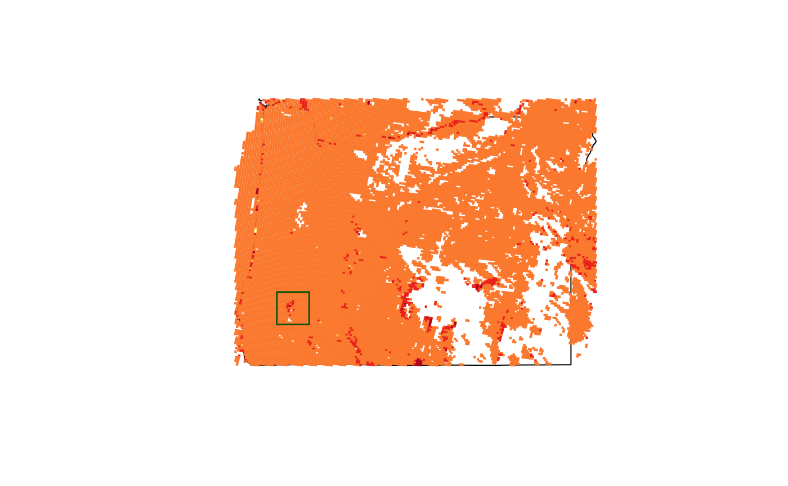
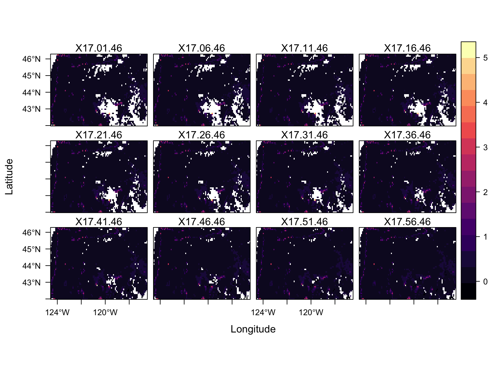
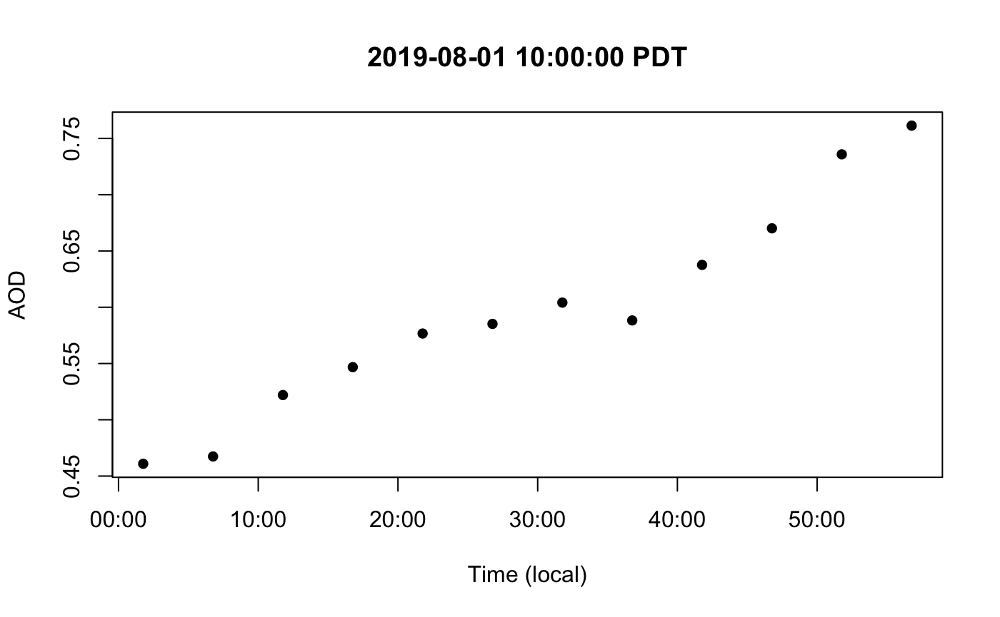
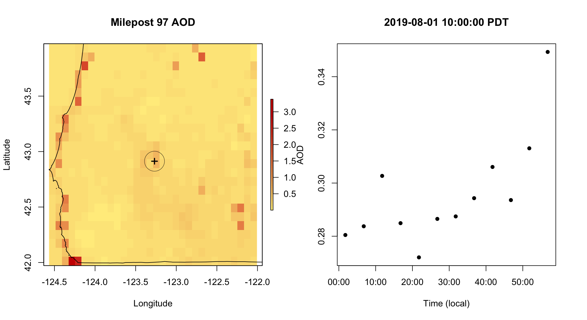

Intro to GOES AODC Data
Mazama Science
7/30/2019
intro_to_goes_aodc_data.RmdAerosol Optical Depth
Aerosol optical depth provides a measure of air quality by estimating the amount of particles in a vertical column of the atmosphere. The absorbtion and scattering of certain spectral wavelengths on the atmosphere is fed into aerosol models to determine an AOD value. This number is unitless, but values closer to 0.0 correspond to a cleaner atmosphere while higher values correspond to more hazy conditions. An average AOD for the U.S. is usually around 0.1 and 0.15.
There are several limitations to this method. Sunlight is required for the measurement process, meaning that AOD levels can’t be estimated during nighttime. Additionally, many areas will have no AOD defined due to the reflectance of clouds or snow.
AOD Source
The MazamaSatelliteUtils package uses AOD data provided by the Advanced Baseline Imager (ABI) on board the GOES-16 satellite. This geostationary satellite is positioned to give the ABI a full view of the lower 48 states so that about every 5 minutes the imager can complete a full scan of this region. The measurements of each individual scan are saved to a NetCDF file for that particular period in time.
More on the ABI’s AOD measurement process can be found in the GOES-R aerosol optical depth overview and the ABI AOD algorithm theoretical basis document.
NetCDF Files
The “Common Data Form” filetype is used for efficient access to multidimensional array-based data such as atmospheric measurements. A typical scan of North America holds 3,750,000 readings per variable, resulting in a file of around 3 to 4 MB. If scans are taken every 5 minutes, a single day would hold about 12 files * 24 hrs * 3 MB = 860 MB worth of data. Due to this fairly large size, downloading a NetCDF using the MazamaSatelliteUtils package saves the file to a specified data directory from which the contents can be accessed through a file handle.
MazamaSatelliteUtils Setup
Let’s start exploring AOD data with the MazamaSatelliteUtils package. First we’ll give ourselves a case study to focuson though, such as the recent Milepost 97 Fire. This incident was reported on July 24, 2019 about 1 mile southeast of Canyonville, Oregon and is still current as of August 11, 2019. This should provide plenty of data for us to examine in detail.
To begin our analysis, let’s load the MazamaSatelliteUtils package and define a SatelliteDataDir: A directory where all of our NetCDF files will be stored to and read from:
library(MazamaSatelliteUtils)
setSatelliteDataDir("~/Data/Satellite")Downloading Data and Creating NetCDF Handles
We can now start loading in satellite data using the goesaodc_downloadAOD() function. For this we have to provide a datetime to specify which files we want. If the datetime is defined to the hour, then all of the NetCDF files generated in that hour will be downloaded. If just the date is given with no time specified, then all files generated during that entire day will be fetched. In either case, any downloaded files will be stored in the SatelliteDataDir we just defined.
Since downloading many NetCDF files can take a bit of time, for now let’s only gather data for August 1, 2019 at 17:00:00 UTC (10AM PDT).
datetime <- lubridate::ymd_h("2019-08-01 17", tz = "UTC")
downloadedFiles <- goesaodc_downloadAOD(datetime)The goesaodc_downloadAOD() function also returns a vector of paths to each downloaded file. However, if a file already exists in the SatelliteDataDir directory then it will not be downloaded again and will not show up in the returned vector. We can see which files are now availible to read by calling goesaodc_listFiles() on the datetime we specified:
dateFiles <- goesaodc_listFiles(datetime)
print(dateFiles)## [1] "OR_ABI-L2-AODC-M6_G16_s20192131701466_e20192131704239_c20192131706505.nc"
## [2] "OR_ABI-L2-AODC-M6_G16_s20192131706466_e20192131709239_c20192131711561.nc"
## [3] "OR_ABI-L2-AODC-M6_G16_s20192131711466_e20192131714239_c20192131716548.nc"
## [4] "OR_ABI-L2-AODC-M6_G16_s20192131716466_e20192131719239_c20192131721506.nc"
## [5] "OR_ABI-L2-AODC-M6_G16_s20192131721466_e20192131724239_c20192131726554.nc"
## [6] "OR_ABI-L2-AODC-M6_G16_s20192131726466_e20192131729239_c20192131731576.nc"
## [7] "OR_ABI-L2-AODC-M6_G16_s20192131731466_e20192131734239_c20192131736514.nc"
## [8] "OR_ABI-L2-AODC-M6_G16_s20192131736466_e20192131739239_c20192131741522.nc"
## [9] "OR_ABI-L2-AODC-M6_G16_s20192131741466_e20192131744239_c20192131746521.nc"
## [10] "OR_ABI-L2-AODC-M6_G16_s20192131746466_e20192131749239_c20192131751539.nc"
## [11] "OR_ABI-L2-AODC-M6_G16_s20192131751466_e20192131754239_c20192131756556.nc"
## [12] "OR_ABI-L2-AODC-M6_G16_s20192131756466_e20192131759239_c20192131801513.nc"In order to read the contents of a NetCDF file we will need a handle to access it by. This can be done by calling goesaodc_openFile() on the dataset filename, so let’s open the first one in our downloaded time range dateFiles[1]:
nc <- goesaodc_openFile(filename = dateFiles[1])Reading Through NetCDF Handles
Now that we have a handle to a netCDF file we can freely access readings from any of the variables in the dataset (listed by names(nc$var)) using the ncvar_get() function from the ncdf4 package.
readings_aod <- as.numeric(ncdf4::ncvar_get(nc, "AOD"))
print(length(readings_aod))## [1] 3750000## [1] -2.575025 2.475025AOD and DQF Data as a Tibble
For our purposes of mapping AOD values, we can consolidate all the data we need (longitude, latitude, and AOD) and make it even easier to access by forming it into a tibble. The “DQF” variable will be included as well, which represents the data quality flag for each reading. This flag can take one of the four following values:
- 0 - High quality
- 1 - Medium quality
- 2 - Low quality
- 3 - No retrieval flag source p.295:
tb <- goesaodc_createTibble(nc)
knitr::kable(head(tb))| AOD | DQF | lon | lat |
|---|---|---|---|
| 0.3395383 | 2 | -116.7126 | 52.91507 |
| 0.3942509 | 2 | -116.6584 | 52.90973 |
| 0.4041146 | 2 | -116.2278 | 52.86751 |
| 0.5748025 | 2 | -116.1744 | 52.86229 |
| 0.7381697 | 2 | -116.1211 | 52.85709 |
| 0.6993315 | 2 | -116.0678 | 52.85190 |
Working With Data as Spatial Points
We can now finally start visualizing this data on geographic maps by creating and plotting spatial points from the AOD readings. Each spatial point represents a single reading from the ABI’s scan, so that each has a longitude, latitude, AOD value, and DQF flag. Let’s plot all of the points for our datetime on a world map:
sp <- goesaodc_createSpatialPoints(nc)
maps::map("world")
goesaodc_plotSpatialPoints(sp, add = TRUE, cex = 0.1)
As you can see, only the United States and Mexico have readings defined. The GOES-16 satellite can’t scan beyond the disk visible below its geosynchrous orbit, so let’s zoom in to just the U.S.:
maps::map(database = "state")
goesaodc_plotSpatialPoints(sp, add = TRUE, cex = 0.3)
Now that we have a clearer image of the points we can start to understand the AOD values themselves. The goesaodc_plotSpatialPoints() function colors points according to their AOD value by default, but you can switch to DQF coloring by setting the var parameter to “DQF”. Additionally, when creating your spatial points you can also define the dqfLevel which subsets all points that are at and below the given level. Let’s look at the points at level 0 (highest quality):
sp_dqf0 <- goesaodc_createSpatialPoints(nc, dqfLevel = 0)
maps::map("state")
goesaodc_plotSpatialPoints(sp_dqf0, add = TRUE, cex = 0.3)
As you can see, quite a bit of data has been removed since a good portion was marked as only medium or low quality. At this point let’s zoom in all the way to Oregon to check for signs of the Milepost 97 Fire (including all quality levels). We’ll need to use the MazamaSpatialUtils package to get the spatial data for the state and cull out-of-bounds points:
library(MazamaSpatialUtils)
setSpatialDataDir("~/Data/Spatial")
loadSpatialData("USCensusStates")
oregon <- subset(USCensusStates, stateCode == "OR")
bbox_oregon <- sp::bbox(oregon)
sp_oregon <- goesaodc_createSpatialPoints(nc, bbox = bbox_oregon)
lon_mp97 <- -123.268
lat_mp97 <- 42.913
plot(oregon)
goesaodc_plotSpatialPoints(sp_oregon, cex = 0.3, add = TRUE)
points(x = lon_mp97, y = lat_mp97, pch = 0, cex = 4.0, lwd = 1.5, col = "darkgreen")
Rasterizing Spatial Points
A raster image divides geographic space into uniform pixels or “cells”. A grid is placed over a map and the value of each cell is calculated by aggregating the values of all the spatial points that fall in that region. For example, if 20 points are contained within one grid space, then all their AOD values could be averaged together to determine the resulting AOD of the raster cell. The uniform grid size is defined by the resolution of the raster (in lon/lat degrees) such that higher resolutions reduce cell area and increase the detail and accuracy of the final image.
Rasters provide the benefit of filling in undefined spaces around spatial points. They also make it easier to track the readings of specific locations over time if the ABI doesn’t scan the exact coordinates you are hoping to analyze.
rstr <- goesaodc_createRaster(nc, bbox = bbox_oregon, res = 0.08)
pal_aod <- colorRampPalette(c("lightgoldenrod1", "red3"))
raster::plot(rstr$AOD, col = pal_aod(50))
plot(oregon, add = TRUE)
points(x = lon_mp97, y = lat_mp97, pch = 0, cex = 4.0, lwd = 1.5, col = "darkgreen")
The resolution of the raster is defined by latitudial degrees, so that setting res = 1 means every cell will be 1 latitudial degree tall, but may have varying widths due to how longitudes converge near the poles. The estimated area for each cell in km^2 cell can be approximated with raster::area().
approxCellArea <- mean(raster::values(raster::area(rstr)))
cellCount <- dim(rstr)[1] * dim(rstr)[2]
approxCellArea * cellCount## [1] 308807.8This slightly overestimates Oregon’s true area of 255,030 km² due to the imperfect state bounding box and cell area approximation.
Resolutions closer to zero increase the image accuracy while larger values decrease it and produce more ‘blocky’ pictures (but are faster to generate).
AOD Over Time
Raster Stacks
So far we have only looked at a single instant from our original datetime. There are still 11 other datasets from 16:00:00 that we can analyze like we did this one, but it’s also possible to start combining data into either aggregated rasters or time series plots. In both cases we first create a stack of rasters by, again, defining an hour or date of interest. Let’s stay with our current hour:
rstrStack <- goesaodc_createHourlyRasterStack(startdate = datetime,
bbox = bbox_oregon, res = 0.08)This raster stack now contains individual layers for each downloaded dataset. We can visualize them all at once using the rasterVis package:
rasterVis::levelplot(rstrStack)
Additionally, one can aggregate all of the rasters together to make one summarizing image, such as finding the mean AOD value for every pixel between scans.
rstrStackAvg <- raster::mean(rstrStack, na.rm = TRUE)
raster::plot(rstrStackAvg, col = pal_aod(50))
plot(oregon, add = TRUE)
points(x = lon_mp97, y = lat_mp97, pch = 0, cex = 4.0, lwd = 1.5,
col = "darkgreen")
Time Series Plots
Finally, the raster_createLocationTimeseries() function allows us to track AOD values of a specific location in each layer of a stack, resulting in a tibble of AOD values and their timestamps. There are a couple of ways of extracting this location data, however. The default method is to track the one cell that the given coordinates fall into, chosen by setting the method parameter to “simple”. Additionally, one can set method to “bilinear”, and track the AOD interpolated between the 4 closest cells.
datetimeLocal <- datetime
attributes(datetimeLocal)$tzone = "America/Los_Angeles"
ts_simple <- raster_createLocationTimeseries(rasterStack = rstrStack,
longitude = lon_mp97,
latitude = lat_mp97,
bbox = bbox_oregon,
method = "simple")
plot(x = ts_simple$datetime, y = ts_simple$aod, pch = 16, cex = 1,
main = paste(datetimeLocal, "PDT"), xlab = "Time (local)", ylab = "AOD")
Aside from the two method options, we can instead define a buffer, which is a circular area around our location that will aggregate the values of cells that fall within it. Provide the bufferradius in meters and a fun aggregation method such as mean, min, or max. fun is st to mean by default.
ts_buffer <- raster_createLocationTimeseries(rasterStack = rstrStack,
longitude = lon_mp97,
latitude = lat_mp97,
bbox = bbox_oregon,
buffer = 10000,
fun = mean)
plot(x = ts_buffer$datetime, y = ts_buffer$aod, pch = 16, cex = 1,
main = paste(datetimeLocal, "PDT"), xlab = "Time (local)", ylab = "AOD")
A time series plot with only 12 points isn’t especially useful, though it can help show the trend of the AOD values over a portion of a day. We are currently building a function that can create a raster stack for every daylight hour for a given date, which has provided some very interesting insight so far!